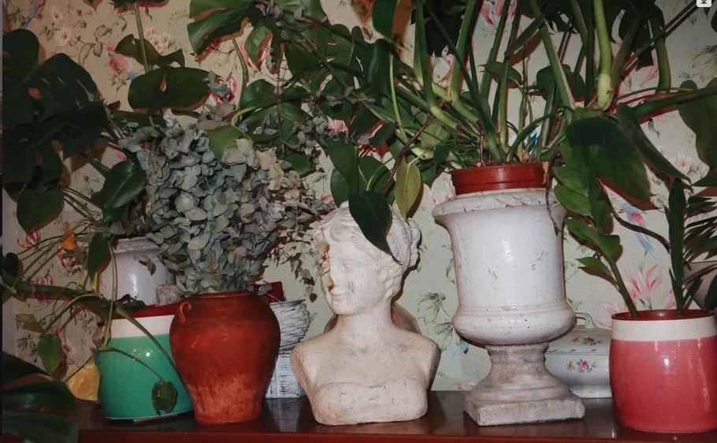
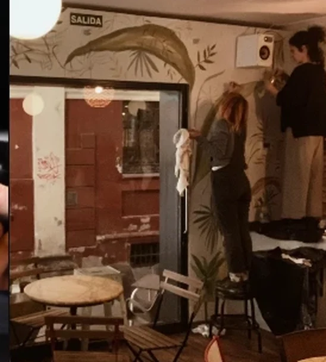
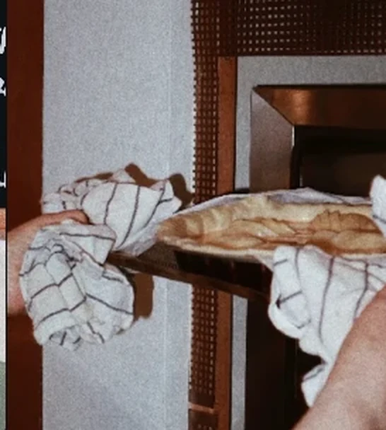
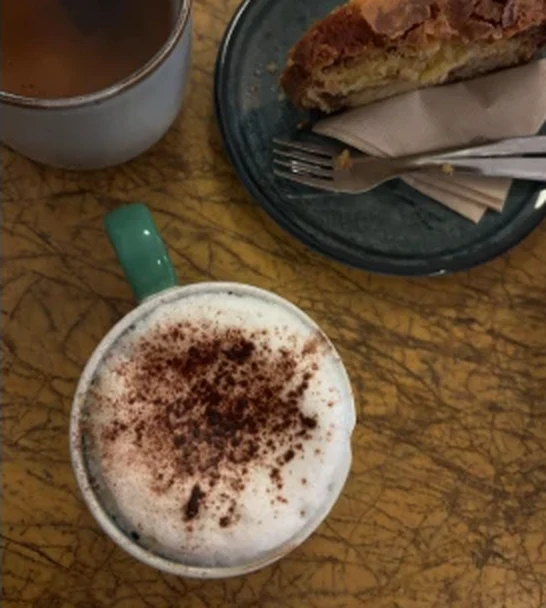
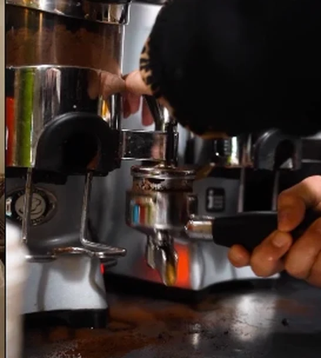
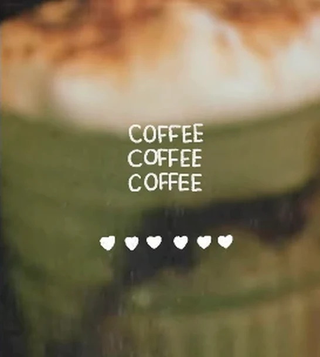
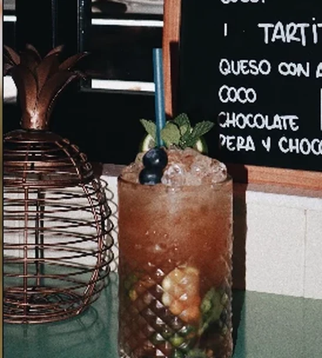
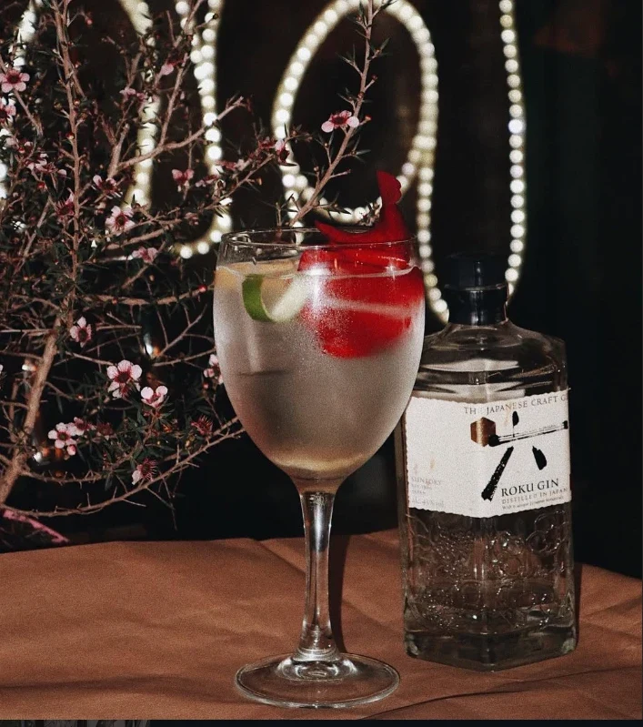
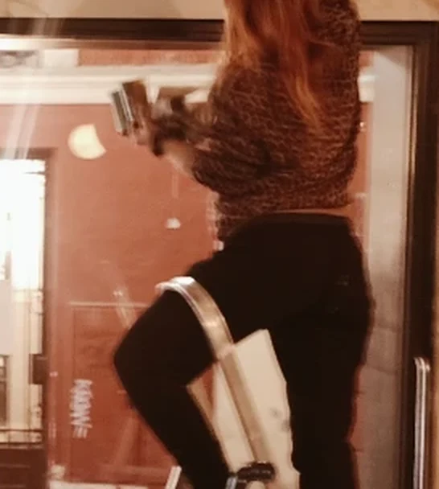

Pasaje del Ciclón · Zaragoza
Café
BOTÁNICO
Bizcochos y tartitas que salen del horno aquí mismo. Café por la mañana, té por la tarde y cócteles cuando el pasaje se queda a media luz.



La casa
Un invernadero
con papel pintado
Las letras de la pared las fuimos encontrando sueltas, cada una por su lado, y ninguna hace juego con la de al lado. Pasa lo mismo con las tazas, con las macetas y con la gente que entra.
Hay papel pintado de flores, un busto de escayola al que nadie recuerda haber puesto nombre, monsteras que ya no caben y, los viernes, alguien con una guitarra.
Lo nuestro
Los bizcochos
Se hornean aquí, se acaban pronto y cambian con lo que haya en el mercado. Esto es lo que suele haber.
Tartitas
- Queso con arándanos4,20
- Coco3,80
- Chocolate3,80
- Pera y chocolate4,00
- Zanahoria y nuez4,00
- Limón y amapola3,80
Pregunta por el bizcocho del día · hay opción vegana



Café de especialidad

Matcha y chocolate

La pizarra del día
Cuando cae la tarde
Tés
y cócteles
La misma casa, otra luz. Se encienden las guirnaldas, salen las copas y el café se queda para mañana.
- Gin tonic de la casa8,00
- Vermut con naranja4,50
- Negroni8,50
- Té chai con leche3,40
- Verde con jazmín3,00
- Infusión botánica3,00


La sala
Para lo que
quieras celebrar
Tenemos una sala aparte que se puede reservar entera: cumpleaños, comidas, presentaciones, meriendas largas o la excusa que haga falta. Nosotros ponemos el bizcocho.
- Cumpleaños y comidas de grupo
- Presentaciones, talleres y clubs de lectura
- Sesiones acústicas los viernes
- Carta a medida, con opciones veganas

El rincón
Así se ve por dentro



Visítanos
Te guardamos
la mesa del fondo
C/ Santiago 3-5 — Pasaje del Ciclón
50001 Zaragoza
Horario por confirmar
- Lunescerrado
- Martes — Jueves09:00 — 20:30
- Viernes09:00 — 00:00
- Sábado10:00 — 00:00
- Domingo10:00 — 20:00